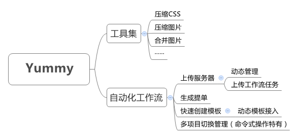

理解工作流程，先要弄明白Yummy的流程架构和文件目录架构。
文件目录架构
Yummy处理的文件目录架构如下：
项目/
│
│
├── css/
│ ├── global.important.css
│ ├── index.css
│ └── play.css
│
├── img/
│ ├── logo.png
│ └── bg.png
│
├── slice/
│ │
│ ├── index/
│ │ ├── icon_share.png
│ │ └── icon_more.png
│ │
│ └── 2x/ // 2x文件夹存放2倍图片
│ │
│ └── play/
│ ├── icon_play.png
│ └── icon_pause.png
│
├── sprite/ // 自动合并生成雪碧图
│ ├── index.png
│ └── play@2x.jpg // 2x文件夹生成的2倍雪碧图
│
└── base64/ // 存放需要转换为base64格式的小图片
├── up.png
└── down.png
slice：存放需要合并的原图片，二倍图需要在slice下建立2x文件夹，支持再次创建子文件夹，并且子文件夹下的图片会单独生成一个sprite合并图片。
sprite：合并后的图片自动在本地生成一个sprite文件夹，如果是二倍图命名附带@2x规范。
Yummy流程架构
